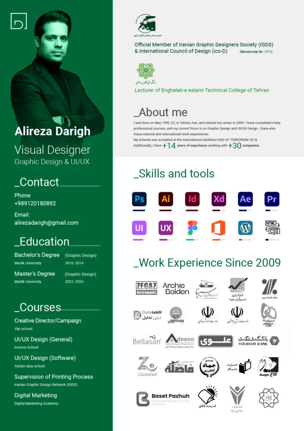

Graphic & Campaign Design
Posters, advertising concepts, event communication and campaign visuals.
INDEPENDENT VISUAL DESIGNER · EST. 2009
I’m Alireza Darigh, a visual designer focused on graphic design, visual communication and digital experiences. I bring strategy, clarity and craft together to make ideas memorable.

THE PORTFOLIO
A selection from print, branding, editorial, campaign and digital design projects.
A LITTLE ABOUT ME
I am a visual designer and design educator with a background in Graphic Design and Visual Communication. Since 2009, I have worked across a broad range of visual communication projects — from identity and print to campaigns and digital interfaces.
My approach combines conceptual thinking, clear communication and attention to detail. I enjoy turning complex information into accessible, engaging visual experiences.
WHAT I DO
A multidisciplinary practice built around visual storytelling and design systems.
Posters, advertising concepts, event communication and campaign visuals.
Logo design, visual identity exploration and brand consistency.
Catalogues, brochures, book covers and structured page layouts.
Digital campaign assets and content-led visual communication.
Interface concepts and user-focused digital experiences.
Teaching, mentoring and sharing practical design knowledge.
TOOLS & SOFTWARE
HAVE A PROJECT IN MIND?
Available for selected freelance projects, collaborations and international opportunities.